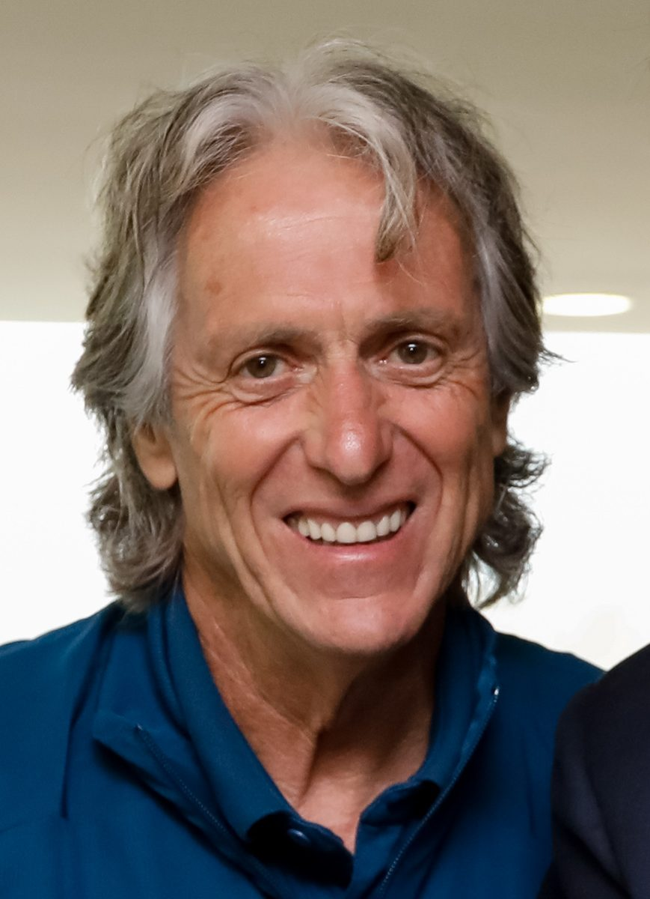

Cristiano Ronaldo Retires from Portugal: The Long Walk in the Number 7 Shirt Reaches Its End
After 23 years, 146 goals, and a European crown, the 41-year-old steps away from international duty to close a transformative chapter.

For more than two decades, one thing in international football barely changed: Portugal's number 7 shirt belonged to Cristiano Ronaldo.
That era has finally closed. On Thursday, 41-year-old Cristiano Ronaldo announced his retirement from international football in a video message to supporters, confirming he would "hand back the number 7 shirt" after a senior career spanning 23 years.
A sudden finish to a monumental run

The announcement brought a quiet conclusion to an uneasy autumn. Ronaldo’s final appearance for the Seleção came on September 24 in a 1-0 Nations League victory over Wales. After being left on the bench against Norway by head coach Jorge Jesus, the veteran forward departed the training camp, eventually deciding his journey under the manager had run its course.
Yet the acrimony of recent weeks cannot overshadow the scale of what came before. The Portuguese Football Federation hailed him as "an inspiring leader, an example of dedication, and the ultimate symbol of the spirit of our national team," promising a proper nationwide tribute. Ronaldo steps away from international football having scored 146 goals for his country. While his pursuit of 1,000 career goals continues in Saudi Arabia with Al-Nassr, where he currently sits on 985, his duties under the national flag are complete.
Transforming a nation's sporting map
To understand what Ronaldo did for Portugal, one must remember where the country stood before his debut against Kazakhstan in August 2003. Portugal had reached only three World Cups and three European Championships in their entire history before his arrival. With Ronaldo leading the line across six World Cups and six Euros, qualification became an expectation rather than a dream.
He captained them to their first major senior trophy at Euro 2016, followed by Nations League titles in 2019 and 2025. He carried a small nation onto world football’s grandest stages and convinced his teammates that they belonged among the giants.
What he left behind for the world
Far beyond Portugal, including across Asia, Ronaldo became a symbol of what discipline and self-belief can build, from humble beginnings on the Atlantic island of Madeira to the top of the world game.
"The goals pass, the cups are in museums, the records end up being beaten," Ronaldo said in his farewell message. "But there is something that time can never erase, the place we occupy in people's hearts."
Generations of young dreamers will wear Portugal’s crimson jersey in the decades to come. But none will ever fill the number 7 quite like the boy from Madeira who refused to accept his country's limits.